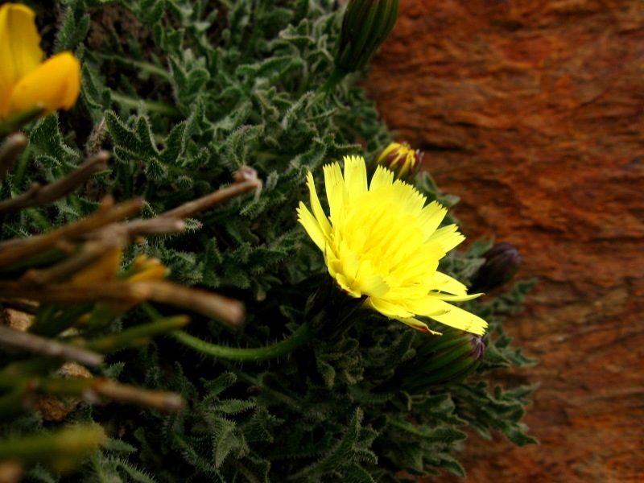

Introducere
Repere geografice
Clima
Geografia politică
Vegetația
Fauna
Relieful
Rețeaua hidrografică
|
Vegetația
Mediteraneană
Este regiunea de vegetație cu cea mai mare extensiune spațială din Spania și este influențată de regiunea climatică omonimă. Valoarea amplitudinii termice și a cantitatea de precipitații ce cade in decursul apariția au determinat două zone principale:

- zona stejarului, în care reprezentantul principal este stejarul de stâncă (Quercus ilex), la care se mai adauga stejarul de plută (Quercus suber), stejarul lusitan (Quercus lusitanica) cu frunze căzătoare. Aceste plante apar în formațiuni reduse în suprafață și care au cel mai adesea forma unor insule sau a unor fâși înguste.
- zona de maquis, alcătuită din tufișuri sempervirescente, greu de străbătut de 1,5-3 m înălțime, în care apar: măslinul sălbatic (Cistus solvifolium), mirtul (Myrtus communis), leandrul (Nerium oleander), laurul nobil sau dafinul (Laurus nobilis), rodiul (Punica granatum), drobita (Genista), și pe alocuri palmierul pitic (Chamaerops humilis).
Eurosiberiană
Această regiune de vegetație se întâlnește în partea de nord a Spaniei, unde predomină precipitațiile bogate și regulate și o climă ceva mai rece decât în restul teritoriului. Și această regiune poate fi împărțită în două zone principale:
- zona atlantică, se găsește în nordul și nord estul țării. Vegetația specifică acestei zone este formată din păduri de foioase dese cu numeroase pajiști verzi. Predomină specii de stejar și fag, adaptate condițiilor de umiditate la care se adaugă specii de brad (Abies) și pin (Pinus silvestris) pe măsura creșterii altitudinii. Covorul vegetal al acestei zone este foarte dezvoltat și variat.
- zona submediteraneană - se întâlnește în Cordiliera Cantabrică. Este specific: stejarul pufos (Quercus rubens), pinul silvestru (Pinus silvestris), la care se mai adaugă și pinul alb (Pinus alba) și stejarul alb (Quercus alba). Odată cu scăderea altitudinii și a precipitațiilor aceste specii încep să fie înlocuite de cele specifice zonei de maquis.

Etajată pe altitudine
În funcție de etajarea pe altitudine se pot întâlni următoarele trei etaje principale:
- etajul montan alpin - se îtâlnește la altitudini mai mari de 2.400 de metri și se caracterizează prin specii cu un ciclu vegetativ redus (din cauza temperaturilor scăzute din timpul iernii). Cele mai întâlnite specii sunt cele de foioase și în special de pin si molid. La altitudine mai mari de 3.000m locul pădurilor de conifere este luat de pajiștile și pașunile alpine.
- etajul subalpin - se întâlnește la altiduni cuprinse între 1.200 și 2.400 de metri și reprezintă o zonă de tranziție între etajul alpin și zone climatică din care acesta face parte.
Vegetația insulelor Canare
Insule Canare prezintă o vegetație specifică, net diferențiată față de cea a Spaniei continentale. Sunt caracteristice specii cu un grad ridicat de endemism (aproximativ 500 de specii de plante se întâlnesc doar în aceste insule și nicăieri altundeva pe glob). Vegetația este puternic influențată de climă și datorită prezenței munților înalți este etajată altitudinal.
|